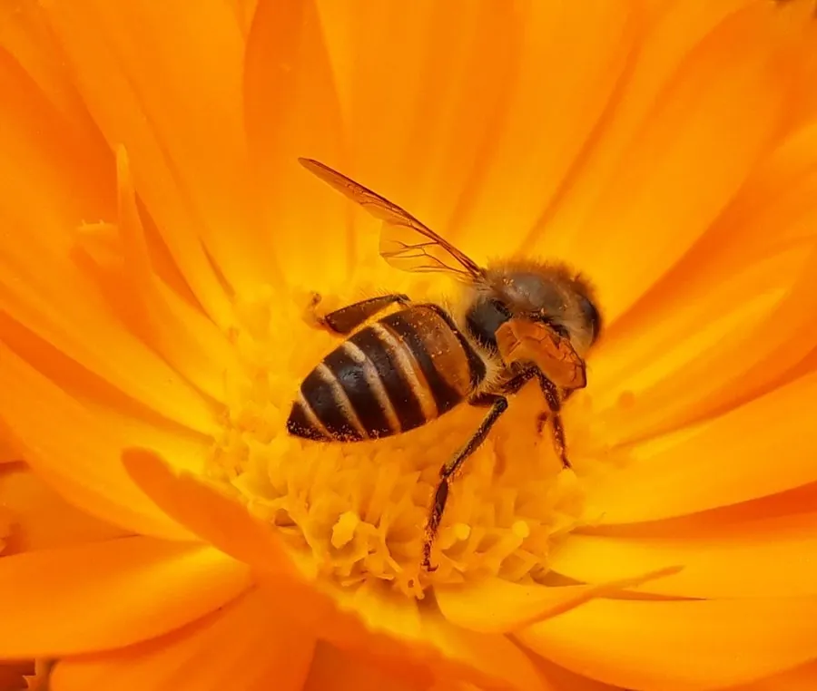

昆虫 · 动物界
中华蜜蜂 Apis cerana

中国本土的蜜蜂物种，体型小巧、行动敏捷，抗螨耐寒，善于利用零星蜜源，在山林间已繁衍数百万年。
- 分类
- 门节肢动物门纲昆虫纲目膜翅目科蜜蜂科属蜜蜂属
- 栖息环境
- 山区与丘陵的阔叶林、灌丛，多在岩壁、树洞或土洞中筑巢
- 地理分布
- 中国大部分地区，以及朝鲜半岛、日本、印度等地
- 保护级别
- 暂无评估；已列入中国畜禽遗传资源保护名录
物种志
中华蜜蜂体型比西方蜜蜂小，工蜂体长约 10–12 mm，体色黑褐，腹部环带明显，绒毛相对稀疏。蜂群同样由蜂王、雄蜂和工蜂组成，但群体规模较小，通常只有数千至两三万只工蜂，巢脾多在岩壁、树洞或土洞中营造。
中蜂耐寒、抗蜂螨能力强，能自行清理巢内的蜂螨，飞行灵活，可取食西方蜜蜂难以利用的零星蜜源，适合山区复杂植被环境。蜂王春季产卵繁殖，群势过大时自然分蜂。中蜂原产中国，分布于大部分山区，是山林林木和农作物的重要传粉者。近年来受西方蜜蜂竞争、农药和栖息地破碎化影响，分布区缩小，各地已建立中蜂保护区并列入畜禽遗传资源保护名录。
形态与习性
- 食性花蜜与花粉，善采集零星蜜源
- 体长工蜂约 10–12 mm，蜂王 13–16 mm
- 寿命工蜂夏季 4–6 周，蜂王 2–4 年
- 繁殖蜂王日产卵约 900–1200 枚，春季自然分蜂
- 抗性抗蜂螨、耐寒，能利用零星蜜源
- 生态作用为山地林木和农作物授粉，中蜂蜂蜜价值较高
趣味知识
- 中蜂对蜂螨有较强的清理能力，可自行清除巢内的蜂螨。
- 自然分蜂时部分工蜂随老蜂王离巢，另寻岩洞或树洞建立新群。
- 中蜂飞行灵活、善于钻入花冠，能采集西方蜜蜂采不到的零星蜜源。
生态关系
- 传粉 → 油菜 重要农业传粉者